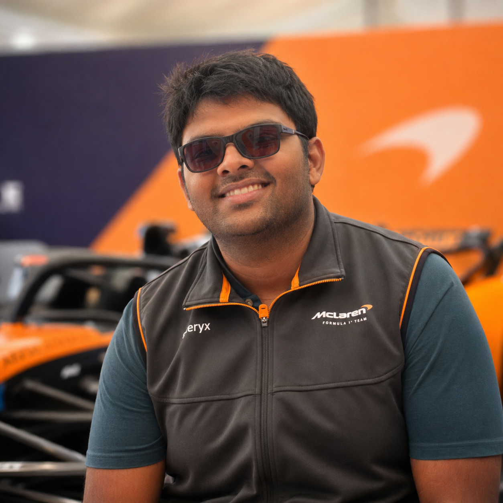
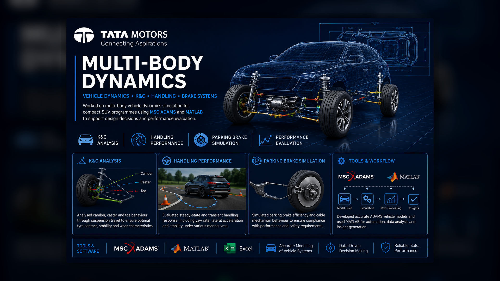
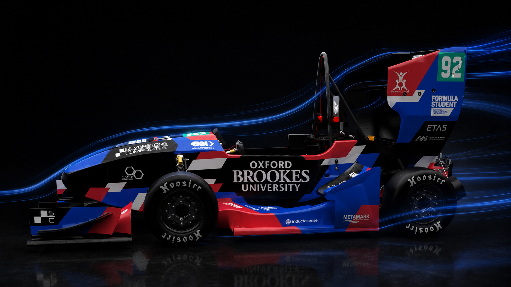
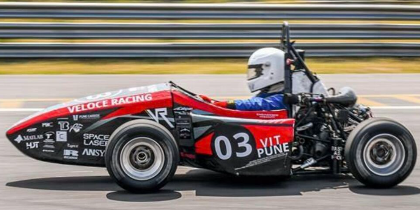
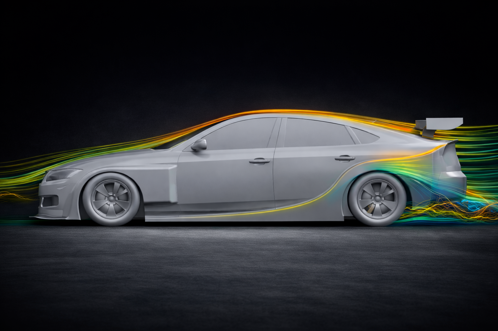
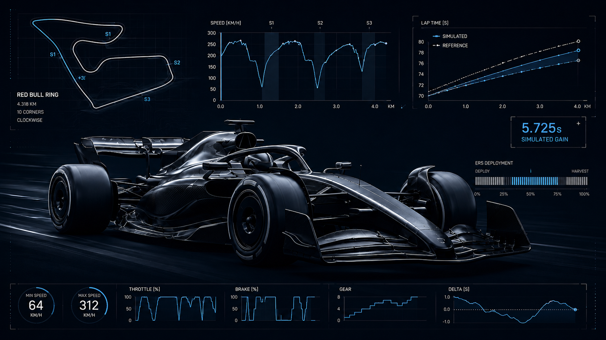
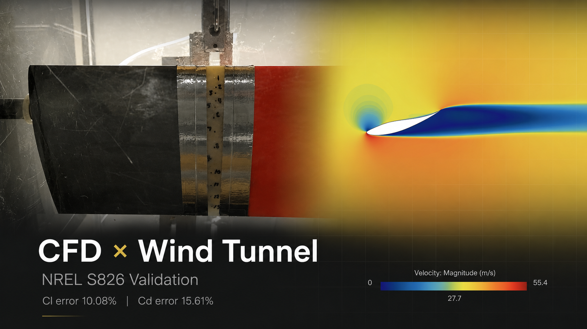
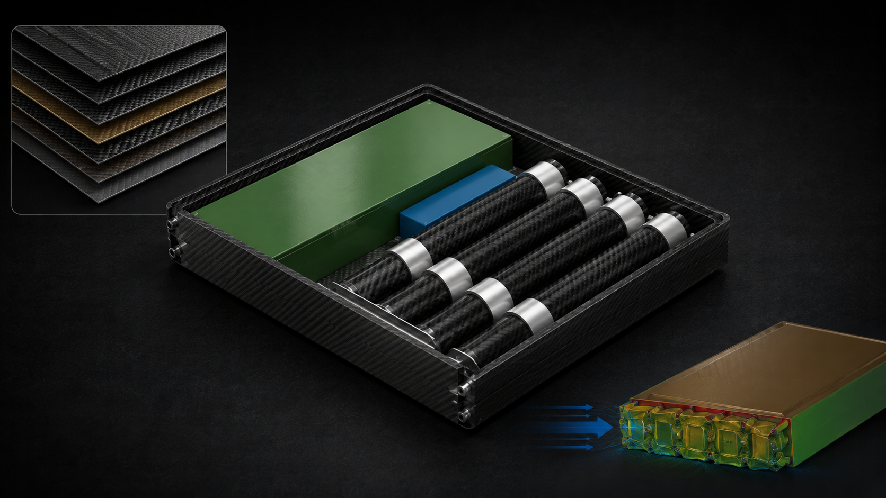

Samvedh Shetty
MSc Motorsport Engineering (Oxford Brookes) — CFD • CAD Surfacing • Vehicle Performance
UK-based | Open to graduate/entry-level roles in Aerodynamics, CFD and Vehicle Performance

About Me
I’m a Motorsport Engineering graduate from Oxford Brookes University, focused on CFD-driven aerodynamic development and vehicle performance analysis. I build repeatable workflows — geometry → simulation → post-processing → lap-time impact — so decisions stay defensible under time pressure.
My recent projects span FIA-style aero development in STAR-CCM+ using RANS/URANS CFD, mesh credibility studies, aero-map generation and MATLAB post-processing, alongside vehicle dynamics modelling in MSC ADAMS and composite crash-energy absorption studies in LS-DYNA.
Core tools: STAR-CCM+, Siemens NX / CATIA V5, MATLAB, Python, MSC ADAMS, LS-DYNA.
Education
Academic background and the technical focus areas that shaped my motorsport engineering work.
MSc Motorsport Engineering
Oxford Brookes University, UK · Sept 2024 – Sept 2025
Focus: FEA composite impact modelling, advanced vehicle dynamics, advanced aerodynamics and race engineering.
BE Mechanical Engineering
Vishwakarma Institute of Technology, India · Aug 2021 – May 2024
Focus: Engineering mechanics, thermodynamics, theory of machines, strength of materials, IC engines and fluid dynamics.
Skills & Expertise
Aerodynamics & CFD
- STAR-CCM+ using RANS/URANS workflows
- Boundary-layer and near-wall modelling
- Mesh strategy and convergence studies
- Aero-map generation and post-processing
- Wind-tunnel and CFD correlation
Vehicle Dynamics
- MSC ADAMS
- AVL VSM and DriveRace
- Suspension kinematics
- Lap-time simulation
- Tyre modelling and handling analysis
CAD & Design
- Siemens NX surfacing
- SolidWorks
- CATIA V5 / 3DEXPERIENCE
- CFD-ready surface preparation
- GD&T and engineering drawings
Analysis & Tools
- MATLAB and Python
- LS-DYNA explicit FEA
- Data analysis and visualisation
- Technical documentation
- Simulation-led design decisions
Engineering Experience
Industry and Formula Student experience applying simulation, vehicle dynamics, aerodynamics, testing and manufacturing workflows to engineering problems.

Tata Motors — Multi-Body Dynamics Internship
Worked on multi-body vehicle dynamics simulation for compact SUV programmes, focusing on K&C behaviour, steady-state handling response and parking-brake efficiency simulation using MSC ADAMS and MATLAB/Excel post-processing.

Oxford Brookes Racing — Aerodynamics Engineer
Supported Formula Student aerodynamic development using STAR-CCM+ CFD and Siemens NX surfacing. Worked on bodywork and wing-component flow analysis, 10% wind-tunnel model preparation and pressure-tapping correlation planning to connect CFD predictions with physical testing.

Veloce Racing India — Vehicle Dynamics Engineer
Worked on Formula Student vehicle dynamics and mechanical integration, supporting steering and suspension packaging, upright manufacture, assembly and testing, ultrasonic NDT inspection, and PLA-based 3D-printed sensor mounting packages.
- Supported steering and suspension integration with packaging, safety and weight constraints.
- Created 2D drawings and supported manufacture, assembly and testing of upright components.
- Used ultrasonic NDT and practical inspection methods to support fatigue-related assessment.
Featured Projects

LM-GT3 Aerodynamic Development
Designed and optimised a complete aerodynamic package for an FIA-compliant LMGT3 race car using CFD. Achieved L/D = 2.24, +23.6% downforce improvement, and 3.97s simulated lap-time reduction at Portimão through Ferrari 499P-inspired design features and comprehensive aero mapping.

F1 2026 Lap-Time Simulation & Race Engineering
Developed and optimised a 2026-regulation Formula 1 vehicle model in AVL VSM at the Red Bull Ring. Evaluated aero setup, ride-height sensitivity, vehicle dynamics parameters, ERS deployment, gearbox behaviour and fuel constraints to reduce simulated lap time from 72.075s to 66.350s.

NREL S826 Aerofoil CFD Validation & Wind-Tunnel Correlation
Combined STAR-CCM+ CFD with wind-tunnel testing of an NREL S826 aerofoil. Conducted mesh convergence, low-y+ wall treatment assessment and CFD/experimental correlation across angle of attack, achieving average errors of 10.08% for Cl and 15.61% for Cd.

Advanced Vehicle Dynamics: Handling & Suspension Modelling
Built ADAMS-based bicycle, twin-track and suspension models to study handling balance, yaw response, weight transfer and ride behaviour. Optimised a 2DOF suspension model using RMS contact patch force variation and evaluated 4DOF pitch response under asymmetric road input.

Composite Chassis Design & Impact Modelling
Developed a composite chassis and impact-structure case study combining laminate strategy, chassis packaging and LS-DYNA crash simulation. Compared five attenuator concepts and selected a T800 tube-block hybrid design that absorbed 81.9 kJ while reducing chassis displacement to approximately 14 mm.